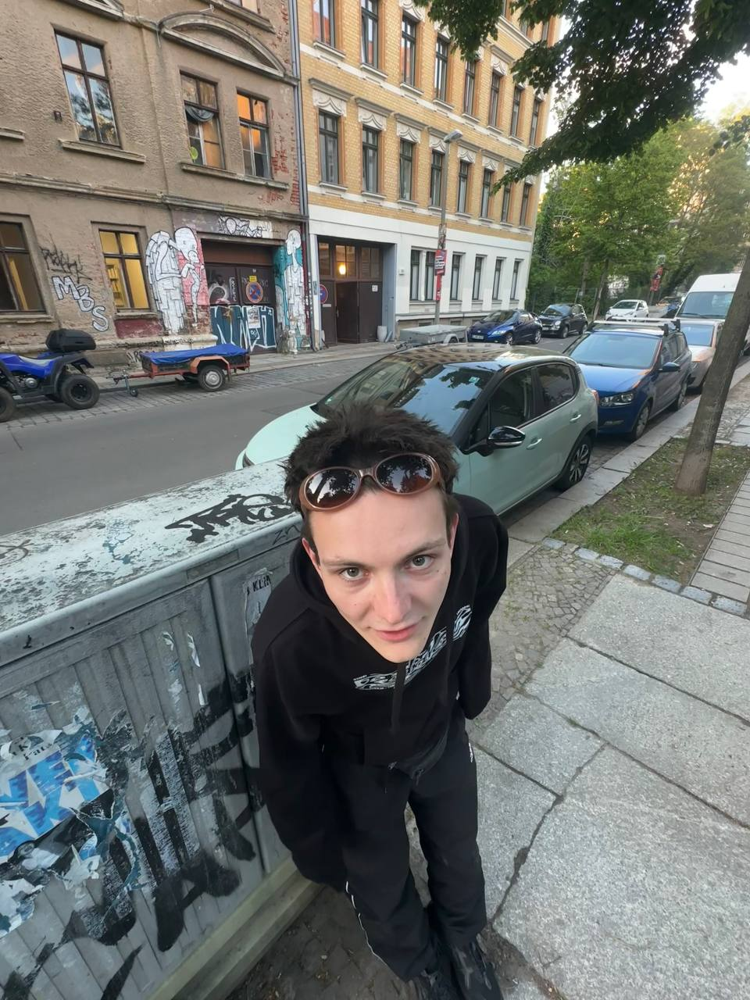

Schuma Christ
Elmar, MANIAC resident and 1⁄4 of the newly founded label “Splinter Cell” is known for his technoid sound and genre-bending sets between groove, trance, psy, tribe and broken beats. His approach towards electronic music is to step beyond the boundaries of genres, focusing on atmosphere-driven selections and detailed mixing always on the look-out for new underground electronics. You can find one of elmars own productions on the new SPL001 Fundraiser VA that features artists like DJ Break da Law, Alda Vain, DJ Sportium, DJ ANGST and more.